Examples gallery
Single-scene generators live under examples/generators/; advanced multi-node graphs under examples/advanced/. Each section matches a *.scene.json basename.
Animated GIF previews are stored under docs/examples/ (next to this file):
docs/examples/generators/{name}-terminal.gif— terminal raster export (80×24, ANSI half-block)docs/examples/generators/{name}-ascii.gif— ASCII raster at 160×48 character cells (2× the ANSI grid), then scaled to 640×384 to match the ANSI GIF (export-example-gifsuses Lanczos + palette)docs/examples/generators/{name}-webgl.gif— headless WebGL blit + palette GIF
The same pattern applies in docs/examples/advanced/.
Image paths in this document are relative to docs/EXAMPLES.md (e.g. examples/generators/plasma-terminal.gif, …-ascii.gif, …-webgl.gif). They render in GitHub, VS Code Markdown Preview, and most static site generators after you generate the files:
pnpm build
pnpm export-example-gifs
Full option tables for every impl are in overscan-effects-catalogue.md. JSON blocks below are this repo’s example config only.
Contents
Generator examples
| Impl | Description |
|---|---|
checkerboard-floor |
Perspective checker ground, sky, fog, scroll |
copperbars |
Horizontal colour bars (Amiga-style copper) |
dot-matrix |
Point grids / paths (e.g. helix) |
fire |
2D heat simulation (stateful) |
fractal-zoom |
Mandelbrot / Julia zoom |
game-of-life |
Cellular automaton on a grid |
glenz |
Stacked transparent shaded shapes |
lasers |
Beams from emitters, sweep and glow |
lissajous |
Parametric curves, trail, glow |
matrix-rain |
Falling glyph columns |
metaballs |
2D metaball field |
moire |
Interference patterns |
oscilloscope |
Faux scope trace + grid |
plasma |
Summed waves + palette |
raymarcher |
SDF ray marching (inline or scenePath GLSL) |
rotozoom |
Rotate + zoom texture |
scroller |
Horizontal text + sine warp |
shadebobs |
Shaded blobs + palette |
sinebobs |
Circles on sine paths |
starfield |
3D star motion |
text |
Positioned text + font |
tunnel |
Cylindrical tunnel |
twister |
Vertical sine “twister” bars |
vector-balls |
3D balls (defaults in node) |
voxel-landscape |
Heightfield voxels |
water-ripple |
Ripple sim + refraction look |
wireframe |
3D wire mesh |
Checkerboard Floor
Scene: examples/generators/checkerboard-floor.scene.json
{
"color1": "#ffe59b",
"color2": "#0c1430",
"fogColor": "#08111f",
"skyColor": "#050814",
"horizon": 0.42,
"scrollSpeed": 0.2,
"rotationSpeed": 0.12
}
| ANSI (80×24) | ASCII (160×48 downscaled) | WebGL |
|---|---|---|
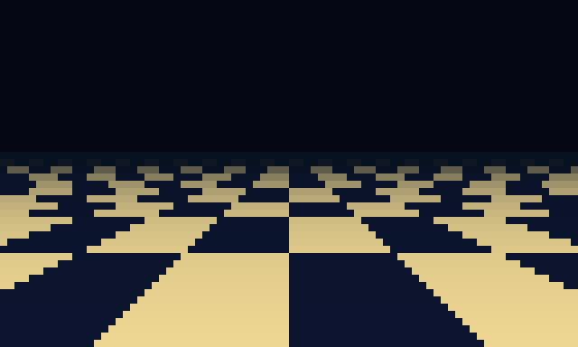 |
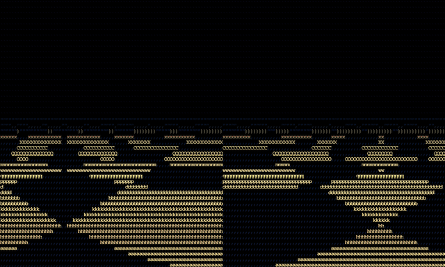 |
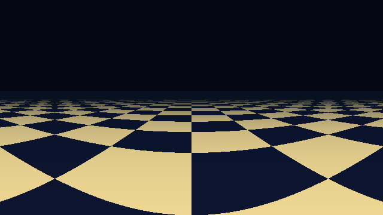 |
Copperbars
Scene: examples/generators/copperbars.scene.json
{ "speed": 1.2, "count": 18 }
| ANSI (80×24) | ASCII (160×48 downscaled) | WebGL |
|---|---|---|
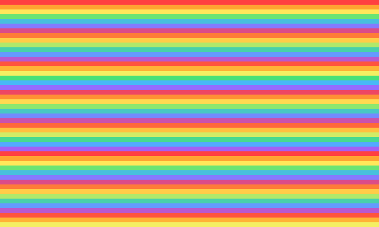 |
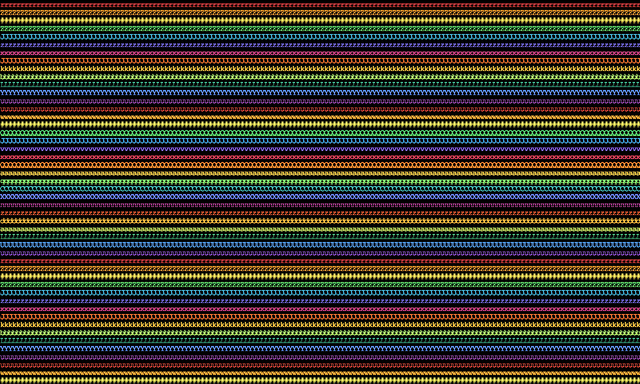 |
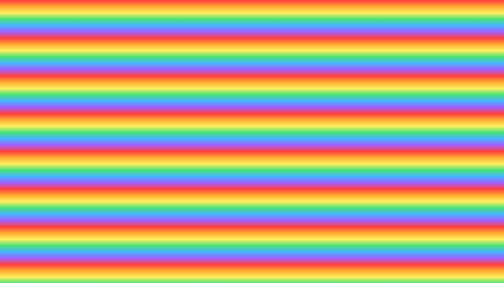 |
Dot Matrix
Scene: examples/generators/dot-matrix.scene.json
{ "shape": "helix", "count": 1800, "pointSize": 2.5 }
| ANSI (80×24) | ASCII (160×48 downscaled) | WebGL |
|---|---|---|
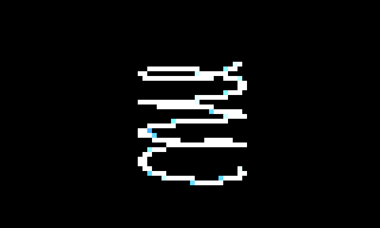 |
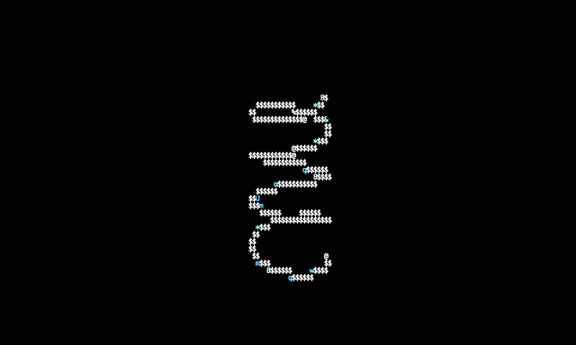 |
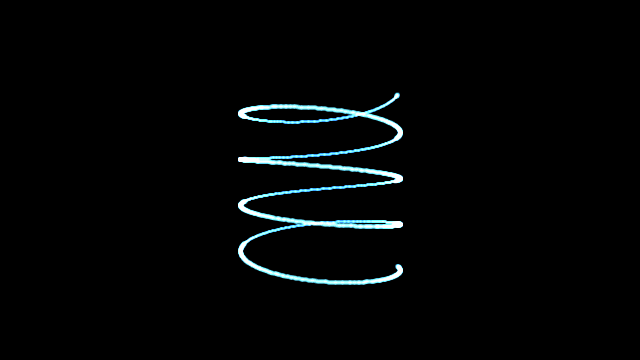 |
Fire
Scene: examples/generators/fire.scene.json
{ "cooling": 0.09, "seed": "noise", "seedIntensity": 1.1 }
| ANSI (80×24) | ASCII (160×48 downscaled) | WebGL |
|---|---|---|
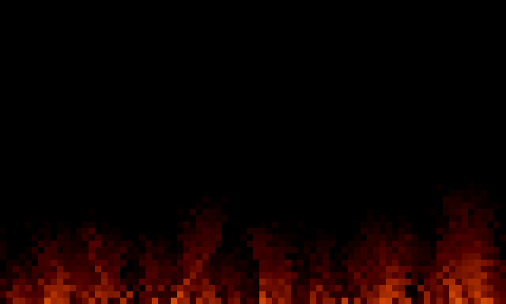 |
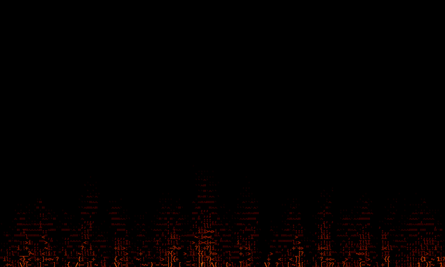 |
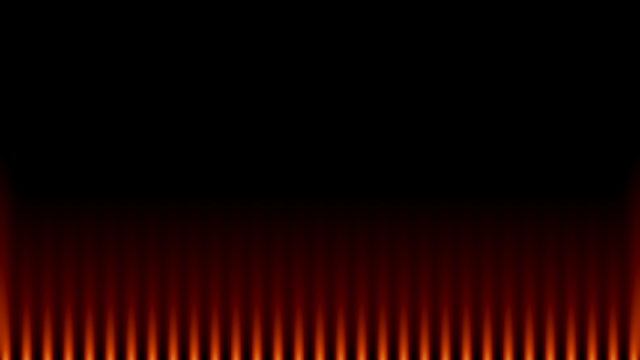 |
Fractal Zoom
Scene: examples/generators/fractal-zoom.scene.json
{
"type": "mandelbrot",
"zoom": 1.1,
"zoomSpeed": 0.06,
"maxIter": 80,
"smooth": true
}
| ANSI (80×24) | ASCII (160×48 downscaled) | WebGL |
|---|---|---|
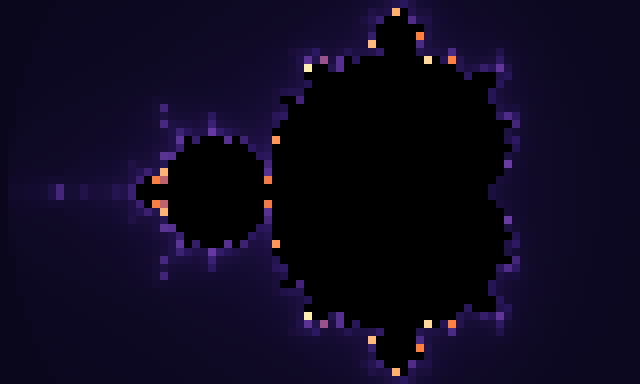 |
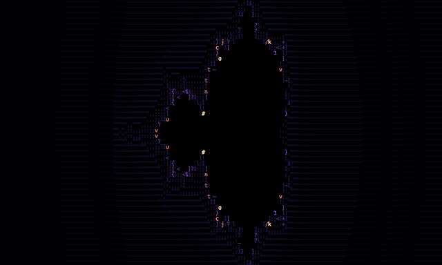 |
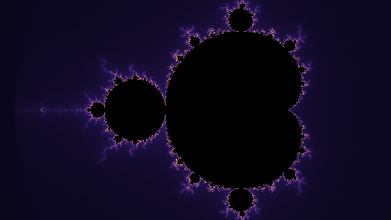 |
Game of Life
Scene: examples/generators/game-of-life.scene.json
{
"seed": "random",
"seedDensity": 0.28,
"scale": 4,
"speed": 2,
"colorMode": "age",
"agePalette": [[8, 10, 18], [0, 180, 100], [255, 255, 255]]
}
| ANSI (80×24) | ASCII (160×48 downscaled) | WebGL |
|---|---|---|
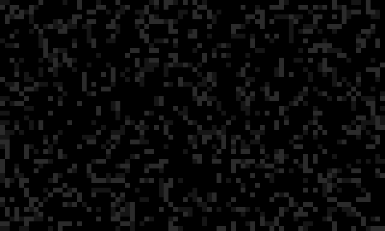 |
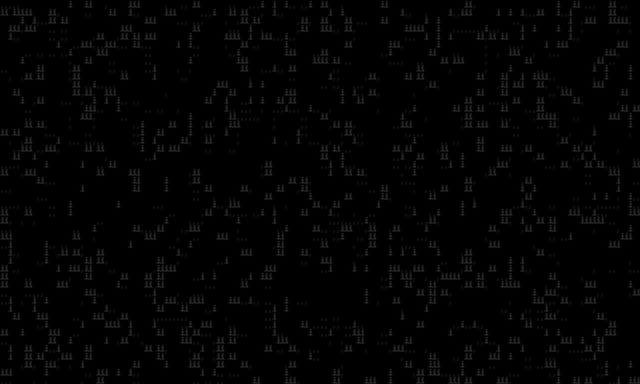 |
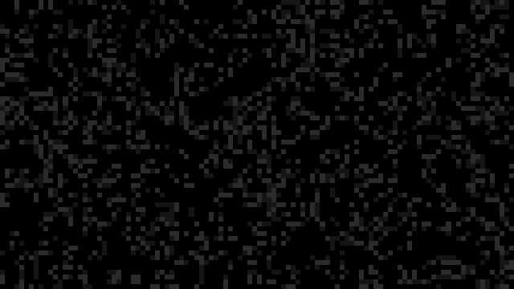 |
Glenz
Scene: examples/generators/glenz.scene.json
{ "backgroundColor": "#04060e", "alpha": 0.36 }
| ANSI (80×24) | ASCII (160×48 downscaled) | WebGL |
|---|---|---|
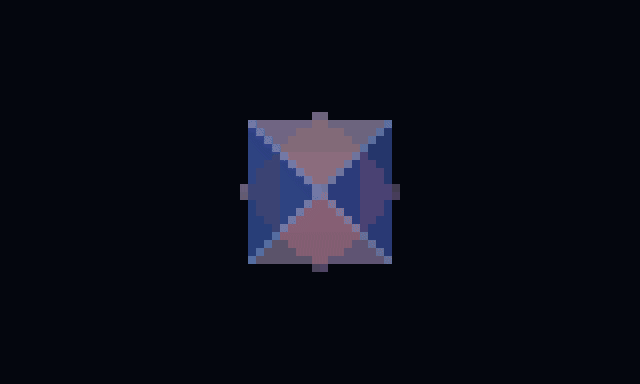 |
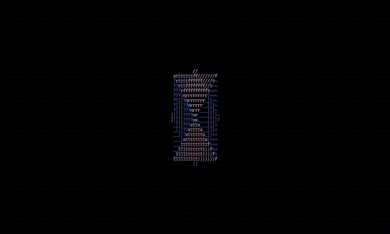 |
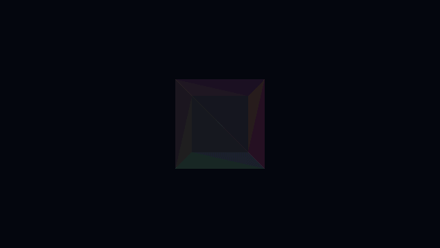 |
Lasers
Scene: examples/generators/lasers.scene.json
{
"beamCount": 20,
"emitterCount": 4,
"spread": 1.8,
"sweepSpeed": 1.1,
"rotationSpeed": 0.55,
"beamWidth": 2.4,
"glowWidth": 20,
"backgroundColor": "#020409"
}
| ANSI (80×24) | ASCII (160×48 downscaled) | WebGL |
|---|---|---|
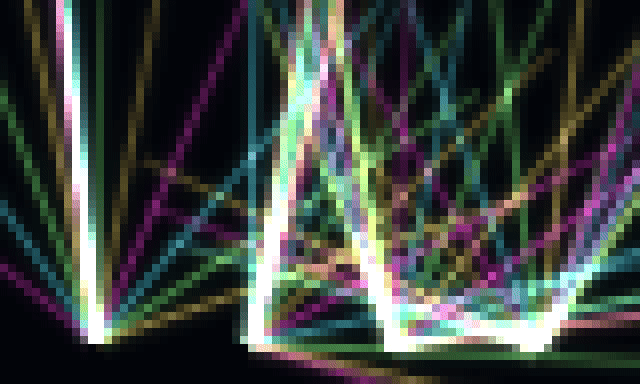 |
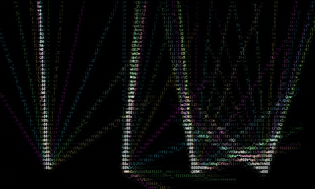 |
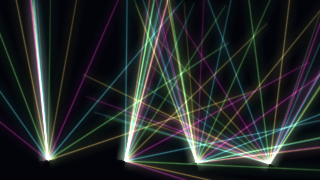 |
Lissajous
Scene: examples/generators/lissajous.scene.json
{
"a": 3,
"b": 2,
"delta": 1.57,
"amplitude": 0.82,
"trailLength": 680,
"decay": 0.95,
"color": "#68ffca",
"lineWidth": 1.5,
"glow": 0.5
}
| ANSI (80×24) | ASCII (160×48 downscaled) | WebGL |
|---|---|---|
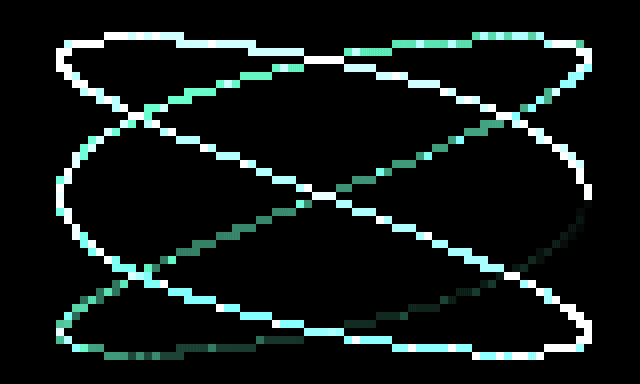 |
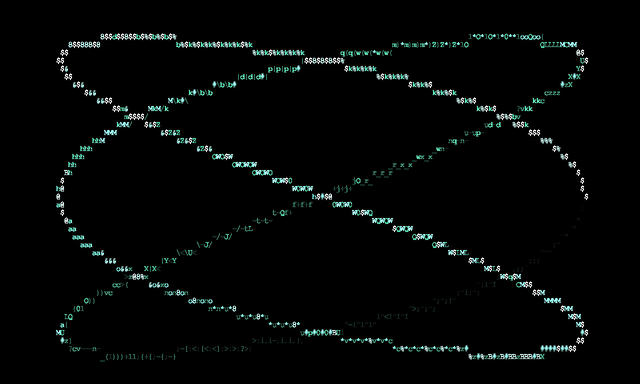 |
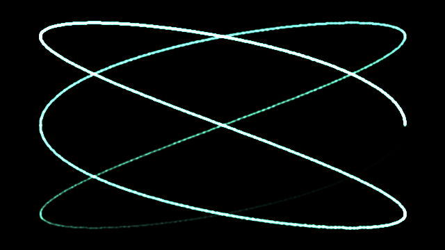 |
Matrix Rain
Scene: examples/generators/matrix-rain.scene.json
{
"charset": "katakana",
"speed": 1,
"density": 0.65,
"trailLength": 0.32,
"fontSize": 15
}
| ANSI (80×24) | ASCII (160×48 downscaled) | WebGL |
|---|---|---|
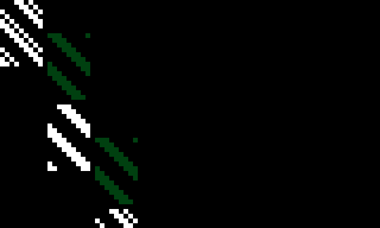 |
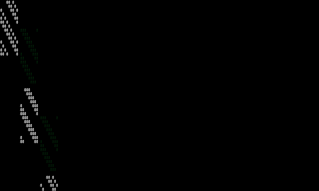 |
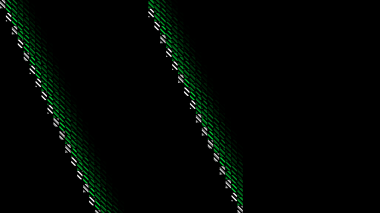 |
Metaballs
Scene: examples/generators/metaballs.scene.json
{
"count": 6,
"threshold": 0.46,
"speed": 1,
"glow": 0.8,
"palette": [[6, 255, 210], [0, 148, 255], [186, 48, 255], [255, 78, 152], [255, 242, 92]]
}
| ANSI (80×24) | ASCII (160×48 downscaled) | WebGL |
|---|---|---|
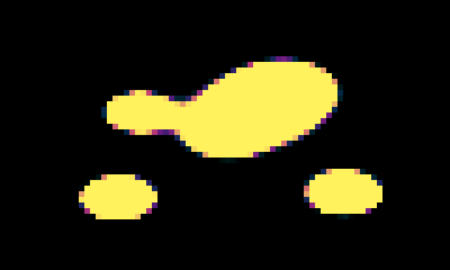 |
Moiré
Scene: examples/generators/moire.scene.json
{
"mode": "radial",
"freq1": 14,
"freq2": 15.5,
"speed1": 0.5,
"speed2": -0.35,
"contrast": 1.5,
"palette": [[0, 0, 0], [80, 20, 120], [255, 100, 200], [255, 255, 255]]
}
| ANSI (80×24) | ASCII (160×48 downscaled) | WebGL |
|---|---|---|
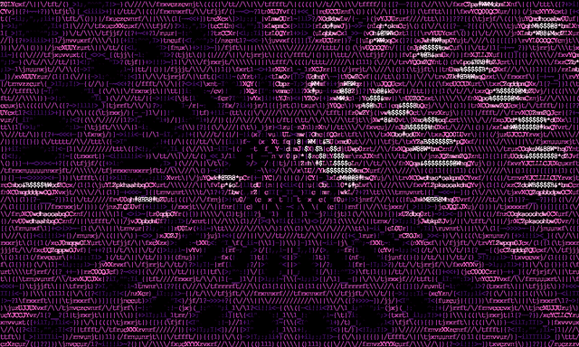 |
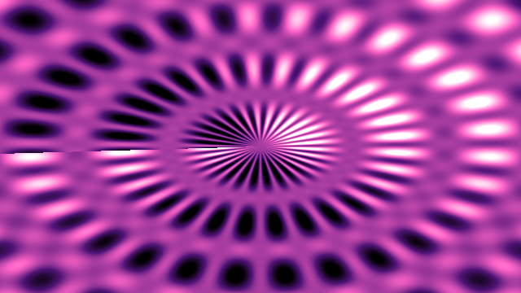 |
Oscilloscope
Scene: examples/generators/oscilloscope.scene.json
{
"color": "#5dffc8",
"lineWidth": 2,
"timeScale": 1.1,
"voltScale": 1,
"gridDivisions": 8
}
| ANSI (80×24) | ASCII (160×48 downscaled) | WebGL |
|---|---|---|
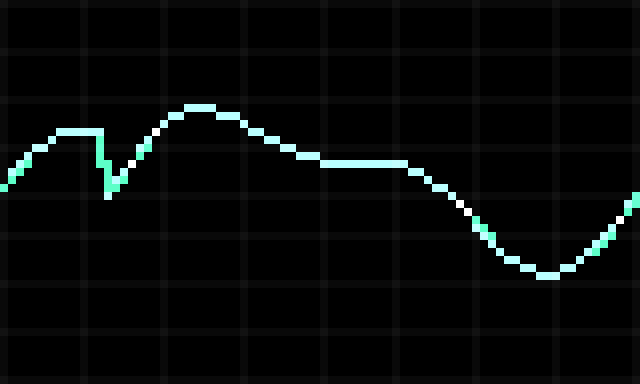 |
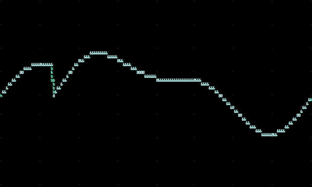 |
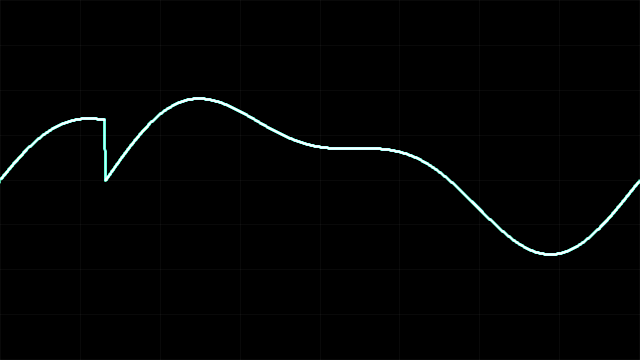 |
Plasma
Scene: examples/generators/plasma.scene.json
{
"speed": 0.85,
"scale": 1.7,
"palette": [[14, 10, 42], [64, 28, 126], [0, 176, 255], [255, 104, 196], [255, 240, 116]]
}
| ANSI (80×24) | ASCII (160×48 downscaled) | WebGL |
|---|---|---|
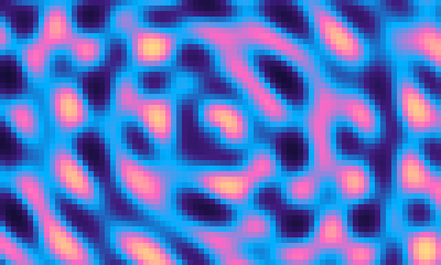 |
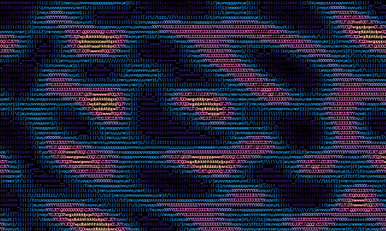 |
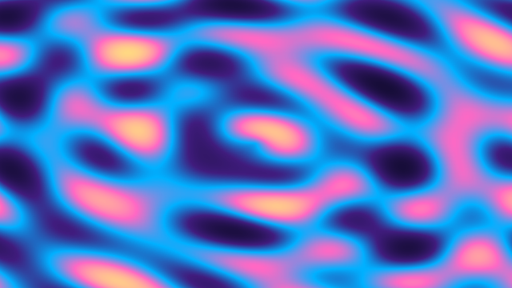 |
Raymarcher (sphere)
Scene: examples/generators/raymarcher.scene.json
{
"fogColor": "#050a14",
"cameraPos": [0, 0, 3],
"scene": "return sdSphere(p, 0.85);"
}
| ANSI (80×24) | ASCII (160×48 downscaled) | WebGL |
|---|---|---|
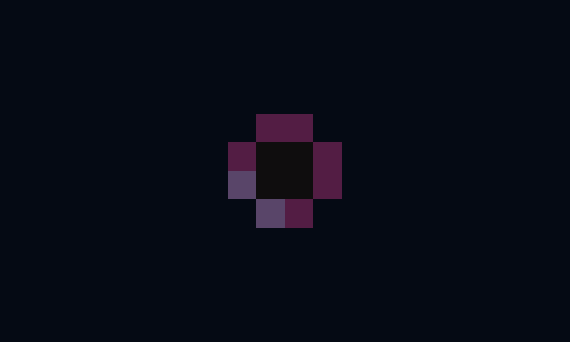 |
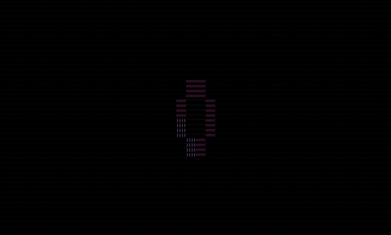 |
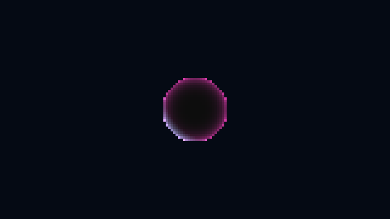 |
Raymarcher Monument
Scene: examples/generators/raymarcher-monument.scene.json
{
"fogColor": "#02050b",
"cameraPos": [0, 0.25, 3.4],
"scenePath": "../../shaders/raymarcher-monument.glsl"
}
| ANSI (80×24) | ASCII (160×48 downscaled) | WebGL |
|---|---|---|
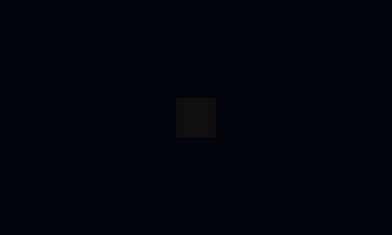 |
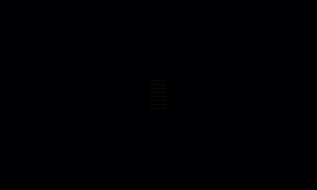 |
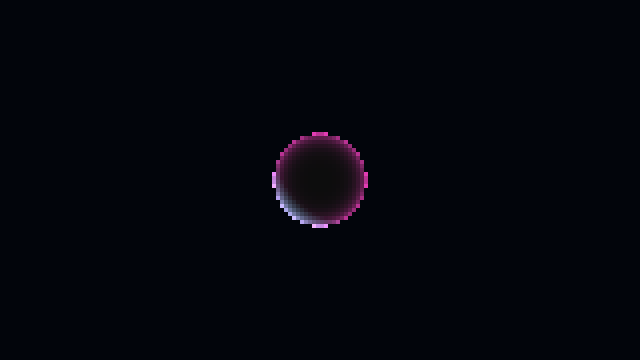 |
Rotozoom
Scene: examples/generators/rotozoom.scene.json
{ "rotationSpeed": 0.9, "zoomSpeed": 0.45, "zoomRange": [0.55, 1.85] }
| ANSI (80×24) | ASCII (160×48 downscaled) | WebGL |
|---|---|---|
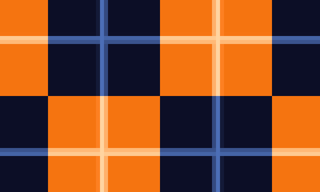 |
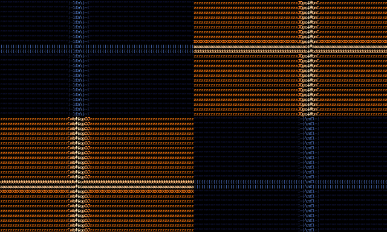 |
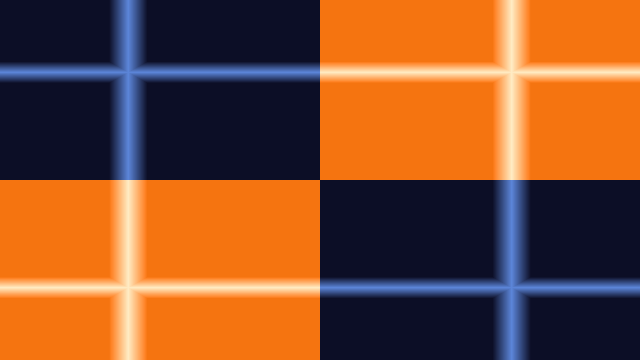 |
Scroller
Scene: examples/generators/scroller.scene.json
{
"text": " >>> OVERSCAN SCROLLER >>> ",
"fontSize": 26,
"speed": 32,
"waveAmplitude": 4,
"waveFrequency": 0.12
}
| ANSI (80×24) | ASCII (160×48 downscaled) | WebGL |
|---|---|---|
Shadebobs
Scene: examples/generators/shadebobs.scene.json
{
"count": 9,
"radius": 30,
"speed": 1.2,
"palette": [[24, 20, 56], [96, 46, 172], [255, 84, 180], [255, 226, 108]]
}
| ANSI (80×24) | ASCII (160×48 downscaled) | WebGL |
|---|---|---|
Sinebobs
Scene: examples/generators/sinebobs.scene.json
{ "count": 18, "radius": 22, "freqX": 1.1, "freqY": 1.35, "amplitude": 0.42 }
| ANSI (80×24) | ASCII (160×48 downscaled) | WebGL |
|---|---|---|
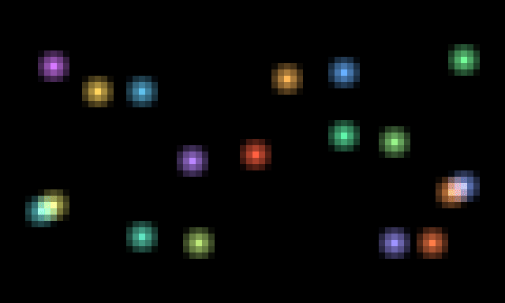 |
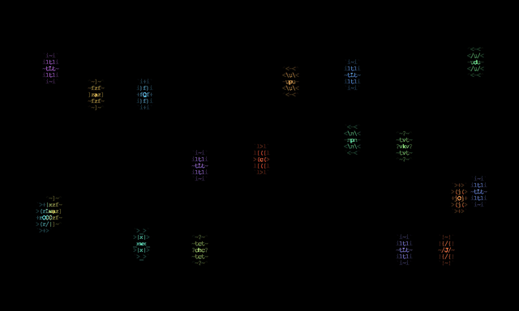 |
Starfield
Scene: examples/generators/starfield.scene.json
{ "count": 260, "warpSpeed": 1.15, "starColor": [230, 244, 255] }
| ANSI (80×24) | ASCII (160×48 downscaled) | WebGL |
|---|---|---|
Text
Scene: examples/generators/text.scene.json
{
"text": "OVERSCAN",
"font": "overscan://fonts/Press2P",
"fontSize": 42,
"align": "center",
"x": 0.5,
"y": 0.5,
"color": "#f4f7ff"
}
| ANSI (80×24) | ASCII (160×48 downscaled) | WebGL |
|---|---|---|
Tunnel
Scene: examples/generators/tunnel.scene.json
{ "speed": 1.8, "twist": 0.12, "fog": 0.35, "zoom": 1.05 }
| ANSI (80×24) | ASCII (160×48 downscaled) | WebGL |
|---|---|---|
Twister
Scene: examples/generators/twister.scene.json
{
"twistSpeed": 1.8,
"verticalFrequency": 1.45,
"width": 0.28,
"sway": 0.12,
"shading": 0.82,
"backgroundColor": "#050812",
"palette": [[255, 78, 150], [255, 208, 72], [90, 246, 168], [82, 164, 255]]
}
| ANSI (80×24) | ASCII (160×48 downscaled) | WebGL |
|---|---|---|
Vector Balls
Scene: examples/generators/vector-balls.scene.json
{}
| ANSI (80×24) | ASCII (160×48 downscaled) | WebGL |
|---|---|---|
Voxel Landscape
Scene: examples/generators/voxel-landscape.scene.json
{}
| ANSI (80×24) | ASCII (160×48 downscaled) | WebGL |
|---|---|---|
Water Ripple
Scene: examples/generators/water-ripple.scene.json
{
"damping": 0.99,
"tapMode": "random",
"tapRate": 2.2,
"tapStrength": 0.85,
"refraction": 0.38
}
| ANSI (80×24) | ASCII (160×48 downscaled) | WebGL |
|---|---|---|
Wireframe
Scene: examples/generators/wireframe.scene.json
{
"color": "#88f8ff",
"backgroundColor": "#04070f",
"lineWidth": 2.4,
"scale": 1.1
}
| ANSI (80×24) | ASCII (160×48 downscaled) | WebGL |
|---|---|---|
Advanced compositions
Pipeline summaries; full graphs are in each linked *.scene.json.
Blur Glow Stack
Metaballs + text → screen-blend → blur-glow → glow → crt.
Scene: examples/advanced/blur-glow-stack.scene.json
| ANSI (80×24) | ASCII (160×48 downscaled) | WebGL |
|---|---|---|
Cells Matrix Scope
Game of life + matrix rain (screen) + oscilloscope (additive) → color-grade → crt.
Scene: examples/advanced/cells-matrix-scope.scene.json
| ANSI (80×24) | ASCII (160×48 downscaled) | WebGL |
|---|---|---|
Copper Sinebobs
Copperbars + sinebobs → screen-blend.
Scene: examples/advanced/copper-sinebobs.scene.json
| ANSI (80×24) | ASCII (160×48 downscaled) | WebGL |
|---|---|---|
Fire Scroller
Fire + scroller → additive-blend.
Scene: examples/advanced/fire-scroller.scene.json
| ANSI (80×24) | ASCII (160×48 downscaled) | WebGL |
|---|---|---|
Floor Metaballs
Checkerboard floor + metaballs → screen-blend → glow → crt.
Scene: examples/advanced/floor-metaballs.scene.json
| ANSI (80×24) | ASCII (160×48 downscaled) | WebGL |
|---|---|---|
Fractal Floor
Fractal zoom + checkerboard floor → overlay-blend → lens → crt.
Scene: examples/advanced/fractal-floor.scene.json
| ANSI (80×24) | ASCII (160×48 downscaled) | WebGL |
|---|---|---|
Moiré Mirror Cycle
Moire → mirror (octal) → palette-cycle.
Scene: examples/advanced/moire-mirror-cycle.scene.json
| ANSI (80×24) | ASCII (160×48 downscaled) | WebGL |
|---|---|---|
Neon Layers
Plasma + tunnel (screen) + lasers (additive) → chromatic-aberration → glow → crt.
Scene: examples/advanced/neon-layers.scene.json
| ANSI (80×24) | ASCII (160×48 downscaled) | WebGL |
|---|---|---|
Raymarcher Metaballs
Raymarcher (GLSL file) + metaballs → screen-blend → color-grade.
Scene: examples/advanced/raymarcher-metaballs.scene.json
| ANSI (80×24) | ASCII (160×48 downscaled) | WebGL |
|---|---|---|
Scroller ASCII
Starfield + scroller (asciiFont) → alpha-blend → palette-flash (track) → ansi-art.
Scene: examples/advanced/scroller-ascii.scene.json
| ANSI (80×24) | ASCII (160×48 downscaled) | WebGL |
|---|---|---|
Text Title
Plasma + text → screen-blend → feedback → glow → crt.
Scene: examples/advanced/text-title.scene.json
| ANSI (80×24) | ASCII (160×48 downscaled) | WebGL |
|---|---|---|
Transition Playground
Plasma ↔ lissajous via transition (iris, Rocket transition.progress).
Scene: examples/advanced/transition-playground.scene.json
| ANSI (80×24) | ASCII (160×48 downscaled) | WebGL |
|---|---|---|
Tunnel Roto Stack
Tunnel + rotozoom → overlay-blend.
Scene: examples/advanced/tunnel-roto-stack.scene.json
| ANSI (80×24) | ASCII (160×48 downscaled) | WebGL |
|---|---|---|
Vector Balls Show
Starfield + vector-balls → screen-blend → glow → crt.
Scene: examples/advanced/vectorballs-show.scene.json
| ANSI (80×24) | ASCII (160×48 downscaled) | WebGL |
|---|---|---|
Voxel Cruise
Starfield + voxel-landscape → additive-blend → feedback → crt.
Scene: examples/advanced/voxel-cruise.scene.json
| ANSI (80×24) | ASCII (160×48 downscaled) | WebGL |
|---|---|---|
Water Dot
Water ripple + dot-matrix → screen-blend → mirror (quad) → crt.
Scene: examples/advanced/water-dot.scene.json
| ANSI (80×24) | ASCII (160×48 downscaled) | WebGL |
|---|---|---|